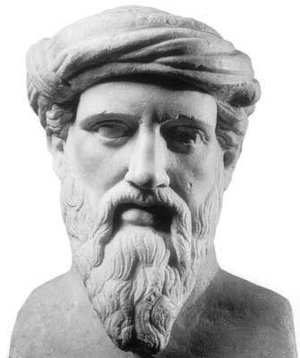
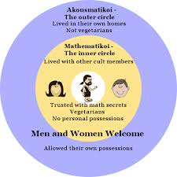

Pythagoras
Pythagoras

Often known as the "first pure mathematician", Pythagoras is known for his contribution to mathematics, philosophy, astronomy, and music. We do not know much about Pythagoras himself as he did not write anything. What we know about Pythagoras comes from writings from his students.
Pythagoras was born in Samos, Greece in about 569 BC. Pythagoras was taught mathematics by Thales, until being advised to go to Egypt to study.
In about 535 BC, Pythagoras went to Egypt to study at the temples. He remained in Egypt until taken as a prisoner ten years later. He was sent to Babylon where he was taught math and science by the Babylonians. In 520 Pythagoras returned to Samos. In Samos Pythagoras developed his own school known as the Semicircle. Pythagoras' teaching was quite different from what was being taught at Samos during that time. This led Pythagoras to Crotona in Italy.
 Around 518 BC, Pythagoras devloped a philosophical and religious school in Crotona. Pythagoras' followers, known as Pythagoreans, followed strict rules regarding their speach, clothing, and diet. A group of Pythagoreans which believed in having no personal belongings and were vegetarians were known as mathematikoi. Those who lived in their own homes and were not vegetarians, but still followed Pythagoras' beliefs were known as Akousmatikoi. As a community, they worked to discover new insights and theories about the world.
Pythagoras believed the following:
-"All is number" meaning that all things are numbers and help us understand the world.
-Math and music can be used to purify the soul which exists in the brain.
-Each number has a characteristic, strength and weakness.
-Everything is dependent on it's opposite (ie. hot and cold, boy and girl, bright and dark, etc.).
-Symbols can have a metaphorical meaning.
-All members of society should remain loyal to society and secrecy.
Pythagoras died somewhere between 500 and 475 BC in Metapontum, Italy. There are a variety of stories regarding his death, so the time and cause of his death is unknown.